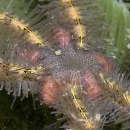
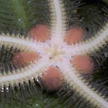

|
|
| brittle stars text index | photo index |
| Phylum Echinodermata > Class Stellaroida > Subclass Ophiuroidea |
| Upsidedown
brittle star Ophiothrix sp. Family Ophiotrichidae updated Apr 2020 Where seen? This sea star with an odd preference to be upside down is sometimes seen among seaweeds and seagrasses on our Northern shores. Especially active at night. Usually seen alone. Features: Disk diameter less than 1cm, arms about 5cm long. Disk thick, petal-shaped. Arms long with blunt cylindrical spines arranged all around the arms like bristles of a bottle brush. Often seen upside down and if turned the right side up will turn upside down again. This may be an adaptation to feeding on substances on the water surface? |

|
 Upperside. |
 Pulau Sekudu, Jun 05 |
 Underside. |
| Upsidedown brittle stars on Singapore shores |
On wildsingapore
flickr
|
| Other sightings on Singapore shores |
References
|